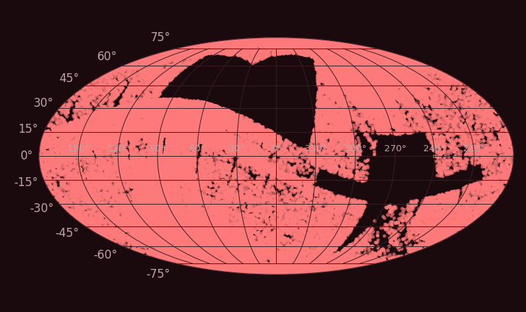
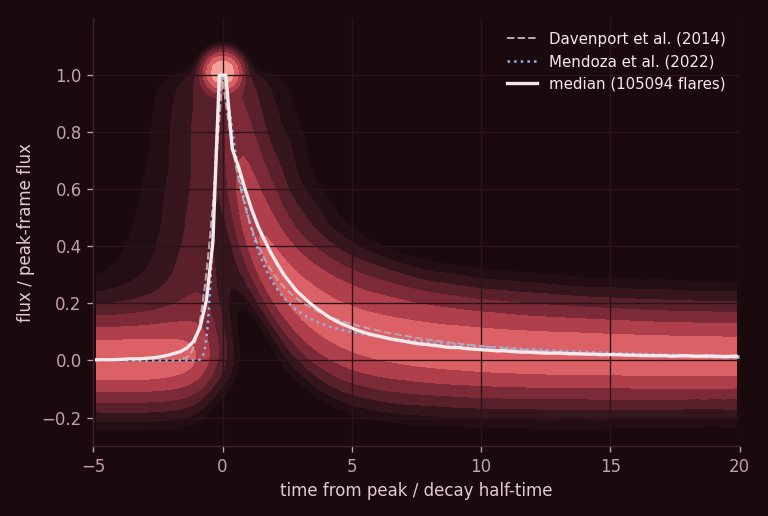
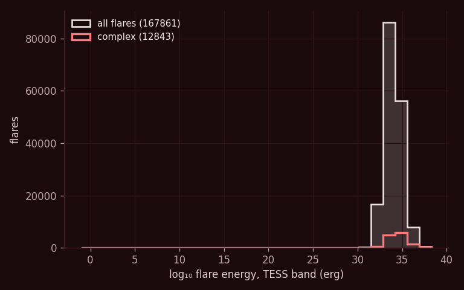
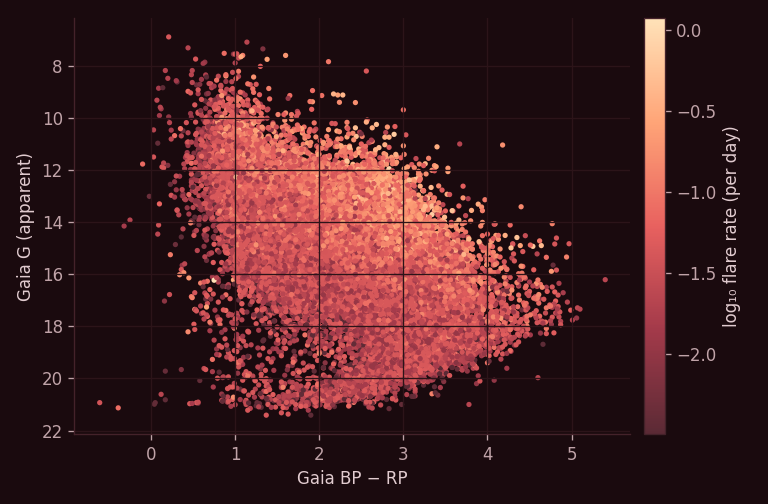

TESS full-frame images
TESSELLATE Stellar Flare Catalogue
Flares found by TESSELLATE, an untargeted search for transients across every TESS full-frame image, matched to their Gaia host stars. Every star has a page with its full TESSELLATE light curve, each flare's shape and classification, and where on the sky each flare came from.
Find a Star
Search by Gaia DR3 source ID, or by position as RA Dec in decimal degrees with an optional radius in arcminutes (e.g. 94.15 82.06 10).
| Gaia DR3 |
G |
BP−RP |
Flares |
Complex |
Rate /day |
Max ED (s) |
Prot (d) |
Sectors |
Sep |
Browse the full catalogue → — every flare star, with filters and sorting. Silver sources → — confident flares without a single confident Gaia host.
The Population

Where the flare stars are on the sky.

Simple flares stacked: time in units of each flare's decay half-time, flux relative to its peak frame, with the Davenport et al. (2014) and Mendoza et al. (2022) templates for comparison.

Flare equivalent durations, simple and complex flares.

Gaia colour–magnitude diagram of the flare stars, coloured by flare rate.
What Is on a Star Page
The star's whole TESSELLATE light curve, sector by sector, at the full 10-minute cadence with the fitted baseline, and a close-up of every flare with its fitted decay and any extra peaks; a table of the star's flares; and an Aladin Lite sky view showing the star, its Gaia neighbours and the 68% localisation region of each flare.
How the Flares Are Found and Measured
Detection. TESSELLATE (Roxburgh & Ridden-Harper et al. 2025) searches difference images built by TESSreduce (Ridden-Harper et al. 2021) for every transient in the TESS full-frame images, without a target list. Events are classified by a machine-learning model; a gold flare has a flare probability of at least 0.9 and a single Gaia star inside its 3σ localisation region, and the flare stars here are the hosts of gold flares.
Localisation. Each flare's position comes from a PSF fit to the difference image. The circles on the star pages are each flare's 3σ region (three times the fitted 1σ per-axis error, on TESS's 21″ pixels) — the region used to match flares to Gaia stars, so a gold flare has exactly one Gaia star inside its circle.
Light curves. Photometry is a forced PSF fit at the Gaia position. The baseline is one least-squares fit per orbit: a smooth spline for slow trends plus, where the star rotates and the data ask for it, a rotation signal whose shape may evolve slowly; flares are excluded by iterative one-sided clipping. Noise is the local robust scatter within ±1 day, with a correction for correlated noise.
Completeness. Flares are detected in the difference images (the image plane), not in the light curves, so a flare can be missed where subtraction artefacts, such as residuals around bright or saturated stars, scattered light or a poor reference image, hide it or break up its detection. Flare counts and rates are therefore lower limits. A brightening in a star's light curve that is not marked as a flare may be one of these missed detections, but it may also be a cosmic ray, a blend with a neighbouring star, or an event the classifier did not accept as a confident flare.
Flare shapes. Flares are modelled in the formalism of Mendoza et al. (2022): the light curve is a Gaussian heating pulse convolved with exponential cooling. The main flare is a Gaussian convolved with two exponential decays, a fast one and a slow one whose share is fitted, which gives both the sharp peak and the long tail; each extra component is a Gaussian convolved with a single exponential. A neural network trained on synthetic flares injected into real TESSELLATE light curves proposes where components are, and everything is averaged over the 10-minute exposure before fitting. A component is kept if it improves the fit by Δχ² > 10 and counts as significant above 20; on synthetic flares with known truth, about 4.5% of flares gain a false significant component. A flare is complex with at least one significant component, marginal with only marginal ones, and otherwise simple. Each component's delay, amplitude, width and share of the flare's flux are listed on the star pages. Faint components are hard to see at 10-minute cadence, so the complex fraction rises with signal-to-noise; compare samples at matched brightness.
Data. Stars (CSV.gz) · Flares (CSV.gz) · Flare peaks (CSV.gz). Each star's light-curve data can be downloaded from its page.